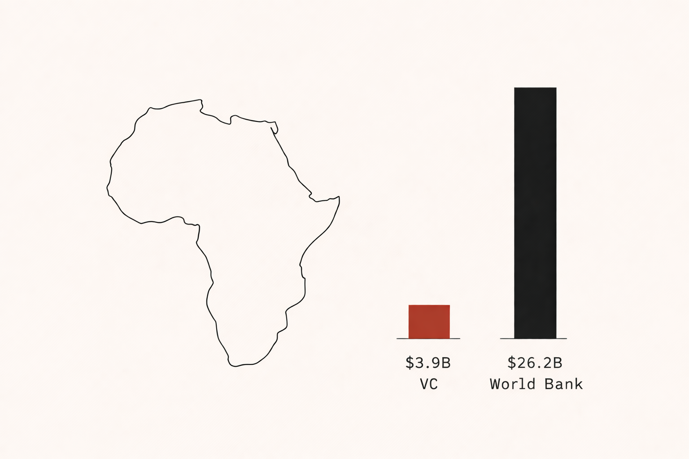
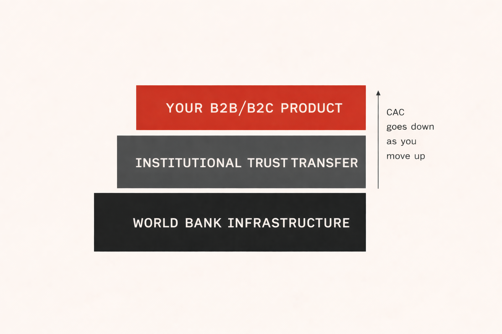

Africa's Most Underpriced Distribution Channel: Why World Bank Tenders Belong in Your GTM
In 2025, VC deployed $3.9B into African tech. The World Bank deployed $26.2B into the same markets. Most operators never looked up from the smaller number - and that is precisely where the arbitrage lives.

I will be honest: I came to this topic sideways. During the Africa Forward webinar in March 2026, a speaker referenced World Bank procurement in passing - a footnote in a conversation dominated by VC deal flow and startup valuations. It landed differently for me than it seemed to for the rest of the room.
So I went back and read the numbers properly. What I found was not a footnote. It was a structural arbitrage that most growth operators in Africa have been systematically ignoring - and one that has direct implications for Africa market entry strategy, CAC reduction, and platform economics in fragmented emerging markets.
The $26.2B Distribution Channel Nobody Talks About
In fiscal year 2025, the World Bank committed $26.2B in financing to Sub-Saharan Africa and other emerging markets. Total VC investment into African tech in the same period was approximately $3.9B according to Africa: The Big Deal data. That is a ratio of nearly 7:1 in favour of institutional capital - deployed into the same markets, targeting many of the same infrastructure gaps.
The standard growth operator playbook treats these two pools of capital as separate games: VC for equity-backed startups, multilateral lending for governments and large infrastructure projects. That separation made more sense ten years ago. It makes less sense now, as World Bank procurement increasingly flows through digital infrastructure contracts, health systems modernisation, and fintech-adjacent financial inclusion mandates.
The Institutional Speed Trap: Reframing the Objection
The standard objection is speed. World Bank procurement cycles are long - 18 to 36 months from expression of interest to contract award is not unusual. For a startup optimising for a Series A in 18 months, that timeline looks like a death sentence.
I understand that objection. I have also watched it cause operators to walk past some of the most durable distribution opportunities available in Africa's emerging markets. The speed problem is real. But it is a timing problem, not a structural one. The operators who treat institutional procurement as a parallel track - something you build toward while the VC-speed business runs - tend to find that the first contract win changes their unit economics in ways that no amount of performance marketing can replicate.
Bureaucracy as a filter is the reframe that matters. If the procurement cycle is genuinely difficult, that difficulty is doing something useful: it is keeping out the competitors who are not serious enough to navigate it. The operators who are still standing at the end of an 18-month tender process tend to be the ones with real product-market fit and real operational capacity. That is a different quality of competitor than the ones you face in a standard B2B sales cycle.
The Live Pipeline: What Emerging Markets Strategy Looks Like in Practice
This is not theoretical. The active procurement pipeline in Africa right now includes a set of projects that should be on every growth operator's radar who is building in the infrastructure, connectivity, or financial inclusion space.
The BRIDGE Project in Nigeria - Broadband Infrastructure for Digital Growth and Enabling Services - is a $1.6B program specifically designed to expand digital infrastructure in underserved regions. The procurement opportunities underneath that headline number include connectivity provision, device distribution, digital literacy programs, and adjacent services that a well-positioned operator could realistically compete for.
In Benin, the government convened a dedicated broadband summit in early 2026 to accelerate infrastructure deployment under a World Bank-backed mandate. In Nigeria, the Health Systems Procurement Program (HeSP) at $250M includes digital health components that touch telemedicine infrastructure, data management platforms, and community health worker tools - all areas where operators with existing Africa market entry experience have a credible edge.
Trust Transfer as a Distribution Channel
Here is the platform economics insight that makes this more than a procurement conversation. When the World Bank certifies a vendor through its procurement process, something happens beyond the contract award: the vendor inherits a layer of institutional credibility that is extraordinarily difficult to build through conventional marketing.
In markets where trust in new digital services is hard-won - where the default consumer posture toward unfamiliar products is skepticism - the ability to say "this was procured under World Bank standards" functions as a distribution accelerator. It is not a guarantee of product-market fit. But it lowers the activation barrier in ways that traditional CAC models do not capture.

The diagram above captures the structural logic. World Bank infrastructure sits at the base. Institutional trust transfer sits in the middle layer. Your B2B or B2C product rides on top. As you move up the stack, CAC goes down - because each layer below has already done the credibility work that you would otherwise have to buy through paid acquisition. This is the same infrastructure-first logic that underpins Jumia's PUDO network moat and Airtel's B2B infrastructure pivot - own the trust layer, and the economics of everything above it improve.
The GTM Reframe: Stop asking "how do we acquire users in this market?" and start asking "which institutional infrastructure already has the trust of this market - and how do we position our product to ride on top of it?" In Africa's emerging markets, that is not a procurement question. It is a platform economics question. The answer changes your distribution strategy entirely.
The Glocal Reality: What the Africa Forward Webinar Actually Said
The Africa Forward webinar raised the glocal strategy framing in a way I found genuinely useful. The argument - that "localise everything" is the wrong frame for operators entering African markets - maps directly onto the World Bank tender opportunity. The operators who win these contracts are not the ones who arrive with a fully localised product built from scratch for each market. They are the ones who understand the institutional procurement framework (which is largely standardised across World Bank projects globally) and then adapt execution to local market realities.
This is the glocal arbitrage: global institutional process fluency combined with local operational knowledge. For operators who have spent years in Africa's emerging markets - who understand the regulatory environment, the procurement culture, and the trust dynamics of specific markets - that combination is genuinely rare. And rare capabilities in procurement contexts tend to translate into pricing power that pure-play digital startups cannot access.
What This Means for Emerging Markets Strategy in 2026
The operators who will define Africa's digital economy in the next decade are not going to get there by replicating VC-backed startup playbooks designed for markets with functioning credit infrastructure, reliable address systems, and high baseline digital trust. They are going to get there by building distribution strategies that leverage the institutional capital flows already moving through these markets - and the trust transfer mechanisms that come with them.
World Bank tenders are one lever. They are not the only one, and they are not right for every operator or every stage of growth. But as a distribution channel, they are systematically underpriced relative to their actual strategic value - and in emerging markets strategy, underpriced channels are exactly where the interesting moves happen.
If you are building or advising in African tech and want to think through whether the institutional procurement track makes sense for your specific situation, I am always interested in that conversation. Reach me at jpouandji@gmail.com or via my LinkedIn profile.
Sources
World Bank Annual Report 2025 - $26.2B Africa commitment data
Africa: The Big Deal - $3.9B VC deployment 2025
World Bank BRIDGE Project Nigeria (P176788) - $1.6B digital infrastructure
World Bank HeSP Nigeria (P171930) - $250M health systems
Africa Forward Webinar, March 2026 - Numeum / Business France